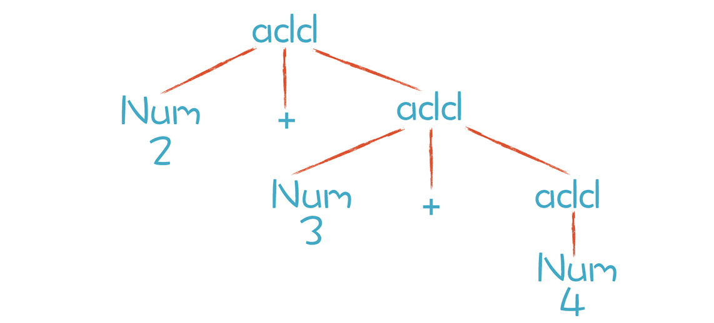

- 00 开篇词 为什么你要学习编译原理？.md.html
- 01 理解代码：编译器的前端技术.md.html
- 02 正则文法和有限自动机：纯手工打造词法分析器.md.html
- 03 语法分析（一）：纯手工打造公式计算器.md.html
- 04 语法分析（二）：解决二元表达式中的难点.md.html
- 05 语法分析（三）：实现一门简单的脚本语言.md.html
- 06 编译器前端工具（一）：用Antlr生成词法、语法分析器.md.html
- 07 编译器前端工具（二）：用Antlr重构脚本语言.md.html
- 08 作用域和生存期：实现块作用域和函数.md.html
- 09 面向对象：实现数据和方法的封装.md.html
- 10 闭包： 理解了原理，它就不反直觉了.md.html
- 11 语义分析（上）：如何建立一个完善的类型系统？.md.html
- 12 语义分析（下）：如何做上下文相关情况的处理？.md.html
- 13 继承和多态：面向对象运行期的动态特性.md.html
- 14 前端技术应用（一）：如何透明地支持数据库分库分表？.md.html
- 15 前端技术应用（二）：如何设计一个报表工具？.md.html
- 16 NFA和DFA：如何自己实现一个正则表达式工具？.md.html
- 17 First和Follow集合：用LL算法推演一个实例.md.html
- 18 移进和规约：用LR算法推演一个实例.md.html
- 19 案例总结与热点问题答疑：对于左递归的语法，为什么我的推导不是左递归的？.md.html
- 20 高效运行：编译器的后端技术.md.html
- 21 运行时机制：突破现象看本质，透过语法看运行时.md.html
- 22 生成汇编代码（一）：汇编语言其实不难学.md.html
- 23 生成汇编代码（二）：把脚本编译成可执行文件.md.html
- 24 中间代码：兼容不同的语言和硬件.md.html
- 25 后端技术的重用：LLVM不仅仅让你高效.md.html
- 26 生成IR：实现静态编译的语言.md.html
- 27 代码优化：为什么你的代码比他的更高效？.md.html
- 28 数据流分析：你写的程序，它更懂.md.html
- 29 目标代码的生成和优化（一）：如何适应各种硬件架构？.md.html
- 30 目标代码的生成和优化（二）：如何适应各种硬件架构？.md.html
- 31 内存计算：对海量数据做计算，到底可以有多快？.md.html
- 32 字节码生成：为什么Spring技术很强大？.md.html
- 33 垃圾收集：能否不停下整个世界？.md.html
- 34 运行时优化：即时编译的原理和作用.md.html
- 35 案例总结与热点问题答疑：后端部分真的比前端部分难吗？.md.html
- 36 当前技术的发展趋势以及其对编译技术的影响.md.html
- 37 云编程：云计算会如何改变编程模式？.md.html
- 38 元编程：一边写程序，一边写语言.md.html
- 加餐 汇编代码编程与栈帧管理.md.html
- 用户故事 因为热爱，所以坚持.md.html
- 第二季回归 这次，我们一起实战解析真实世界的编译器.md.html
- 结束语 用程序语言，推动这个世界的演化.md.html
- 捐赠
04 语法分析（二）：解决二元表达式中的难点
在“03 | 语法分析（一）：纯手工打造公式计算器”中，我们已经初步实现了一个公式计算器。而且你还在这个过程中，直观地获得了写语法分析程序的体验，在一定程度上破除了对语法分析算法的神秘感。
当然了，你也遇到了一些问题，比如怎么消除左递归，怎么确保正确的优先级和结合性。所以本节课的主要目的就是解决这几个问题，让你掌握像算术运算这样的二元表达式（Binary Expression）。
不过在课程开始之前，我想先带你简单地温习一下什么是左递归（Left Recursive）、优先级（Priority）和结合性（Associativity）。
在二元表达式的语法规则中，如果产生式的第一个元素是它自身，那么程序就会无限地递归下去，这种情况就叫做左递归。比如加法表达式的产生式“加法表达式 + 乘法表达式”，就是左递归的。而优先级和结合性则是计算机语言中与表达式有关的核心概念。它们都涉及了语法规则的设计问题。
我们要想深入探讨语法规则设计，需要像在词法分析环节一样，先了解如何用形式化的方法表达语法规则。“工欲善其事必先利其器”。熟练地阅读和书写语法规则，是我们在语法分析环节需要掌握的一项基本功。
所以本节课我会先带你了解如何写语法规则，然后在此基础上，带你解决上面提到的三个问题。
书写语法规则，并进行推导
我们已经知道，语法规则是由上下文无关文法表示的，而上下文无关文法是由一组替换规则（又叫产生式）组成的，比如算术表达式的文法规则可以表达成下面这种形式：
add -> mul | add + mul
mul -> pri | mul * pri
pri -> Id | Num | (add)
按照上面的产生式，add可以替换成mul，或者add + mul。这样的替换过程又叫做“推导”。以“2+3*5” 和 “2+3+4”这两个算术表达式为例，这两个算术表达式的推导过程分别如下图所示：
通过上图的推导过程，你可以清楚地看到这两个表达式是怎样生成的。而分析过程中形成的这棵树，其实就是AST。只不过我们手写的算法在生成AST的时候，通常会做一些简化，省略掉中间一些不必要的节点。比如，“add-add-mul-pri-Num”这一条分支，实际手写时会被简化成“add-Num”。其实，简化AST也是优化编译过程的一种手段，如果不做简化，呈现的效果就是上图的样子。
那么，上图中两颗树的叶子节点有哪些呢？Num、+和*都是终结符，终结符都是词法分析中产生的Token。而那些非叶子节点，就是非终结符。文法的推导过程，就是把非终结符不断替换的过程，让最后的结果没有非终结符，只有终结符。
而在实际应用中，语法规则经常写成下面这种形式：
add ::= mul | add + mul
mul ::= pri | mul * pri
pri ::= Id | Num | (add)
这种写法叫做“巴科斯范式”，简称BNF。Antlr和Yacc这两个工具都用这种写法。为了简化书写，我有时会在课程中把“::=”简化成一个冒号。你看到的时候，知道是什么意思就可以了。
你有时还会听到一个术语，叫做扩展巴科斯范式(EBNF)。它跟普通的BNF表达式最大的区别，就是里面会用到类似正则表达式的一些写法。比如下面这个规则中运用了*号，来表示这个部分可以重复0到多次：
add -> mul (+ mul)*
其实这种写法跟标准的BNF写法是等价的，但是更简洁。为什么是等价的呢？因为一个项多次重复，就等价于通过递归来推导。从这里我们还可以得到一个推论：就是上下文无关文法包含了正则文法，比正则文法能做更多的事情。
确保正确的优先级
掌握了语法规则的写法之后，我们来看看如何用语法规则来保证表达式的优先级。刚刚，我们由加法规则推导到乘法规则，这种方式保证了AST中的乘法节点一定会在加法节点的下层，也就保证了乘法计算优先于加法计算。
听到这儿，你一定会想到，我们应该把关系运算（>、=、<）放在加法的上层，逻辑运算（and、or）放在关系运算的上层。的确如此，我们试着将它写出来：
exp -> or | or = exp
or -> and | or || and
and -> equal | and && equal
equal -> rel | equal == rel | equal != rel
rel -> add | rel > add | rel < add | rel >= add | rel <= add
add -> mul | add + mul | add - mul
mul -> pri | mul * pri | mul / pri
这里表达的优先级从低到高是：赋值运算、逻辑运算（or）、逻辑运算（and）、相等比较（equal）、大小比较（rel）、加法运算（add）、乘法运算（mul）和基础表达式（pri）。
实际语言中还有更多不同的优先级，比如位运算等。而且优先级是能够改变的，比如我们通常会在语法里通过括号来改变计算的优先级。不过这怎么表达成语法规则呢？
其实，我们在最低层，也就是优先级最高的基础表达式（pri）这里，用括号把表达式包裹起来，递归地引用表达式就可以了。这样的话，只要在解析表达式的时候遇到括号，那么就知道这个是最优先的。这样的话就实现了优先级的改变：
pri -> Id | Literal | (exp)
了解了这些内容之后，到目前为止，你已经会写整套的表达式规则了，也能让公式计算器支持这些规则了。另外，在使用一门语言的时候，如果你不清楚各种运算确切的优先级，除了查阅常规的资料，你还多了一项新技能，就是阅读这门语言的语法规则文件，这些规则可能就是用BNF或EBNF的写法书写的。
弄明白优先级的问题以后，我们再来讨论一下结合性这个问题。
确保正确的结合性
在上一讲中，我针对算术表达式写的第二个文法是错的，因为它的计算顺序是错的。“2+3+4”这个算术表达式，先计算了“3+4”然后才和“2”相加，计算顺序从右到左，正确的应该是从左往右才对。
这就是运算符的结合性问题。什么是结合性呢？同样优先级的运算符是从左到右计算还是从右到左计算叫做结合性。我们常见的加减乘除等算术运算是左结合的，“.”符号也是左结合的。
比如“rectangle.center.x” 是先获得长方形（rectangle）的中心点（center），再获得这个点的x坐标。计算顺序是从左向右的。那有没有右结合的例子呢？肯定是有的。赋值运算就是典型的右结合的例子，比如“x = y = 10”。
我们再来回顾一下“2+3+4”计算顺序出错的原因。用之前错误的右递归的文法解析这个表达式形成的简化版本的AST如下：

根据这个AST做计算会出现计算顺序的错误。不过如果我们将递归项写在左边，就不会出现这种结合性的错误。于是我们得出一个规律：对于左结合的运算符，递归项要放在左边；而右结合的运算符，递归项放在右边。
所以你能看到，我们在写加法表达式的规则的时候，是这样写的：
add -> mul | add + mul
这是我们犯错之后所学到的知识。那么问题来了，大多数二元运算都是左结合的，那岂不是都要面临左递归问题？不用担心，我们可以通过改写左递归的文法，解决这个问题。
消除左递归
我提到过左递归的情况，也指出递归下降算法不能处理左递归。这里我要补充一点，并不是所有的算法都不能处理左递归，对于另外一些算法，左递归是没有问题的，比如LR算法。
消除左递归，用一个标准的方法，就能够把左递归文法改写成非左递归的文法。以加法表达式规则为例，原来的文法是“add -> add + mul”，现在我们改写成：
add -> mul add'
add' -> + mul add' | ε
文法中，ε（读作epsilon）是空集的意思。接下来，我们用刚刚改写的规则再次推导一下 “2+3+4”这个表达式，得到了下图中左边的结果：

左边的分析树是推导后的结果。问题是，由于add’的规则是右递归的，如果用标准的递归下降算法，我们会跟上一讲一样，又会出现运算符结合性的错误。我们期待的AST是右边的那棵，它的结合性才是正确的。那么有没有解决办法呢？
答案是有的。我们仔细分析一下上面语法规则的推导过程。只有第一步是按照add规则推导，之后都是按照add’规则推导，一直到结束。
如果用EBNF方式表达，也就是允许用*号和+号表示重复，上面两条规则可以合并成一条：
add -> mul (+ mul)*
写成这样有什么好处呢？能够优化我们写算法的思路。对于(+ mul)*这部分，我们其实可以写成一个循环，而不是一次次的递归调用。伪代码如下：
mul();
while(next token is +){
mul()
createAddNode
}
我们扩展一下话题。在研究递归函数的时候，有一个概念叫做尾递归，尾递归函数的最后一句是递归地调用自身。
编译程序通常都会把尾递归转化为一个循环语句，使用的原理跟上面的伪代码是一样的。相对于递归调用来说，循环语句对系统资源的开销更低，因此，把尾递归转化为循环语句也是一种编译优化技术。
好了，我们继续左递归的话题。现在我们知道怎么写这种左递归的算法了，大概是下面的样子：
private SimpleASTNode additive(TokenReader tokens) throws Exception {
SimpleASTNode child1 = multiplicative(tokens); //应用add规则
SimpleASTNode node = child1;
if (child1 != null) {
while (true) { //循环应用add'
Token token = tokens.peek();
if (token != null && (token.getType() == TokenType.Plus || token.getType() == TokenType.Minus)) {
token = tokens.read(); //读出加号
SimpleASTNode child2 = multiplicative(tokens); //计算下级节点
node = new SimpleASTNode(ASTNodeType.Additive, token.getText());
node.addChild(child1); //注意，新节点在顶层，保证正确的结合性
node.addChild(child2);
child1 = node;
} else {
break;
}
}
}
return node;
}
修改完后，再次运行语法分析器分析“2+3+4+5”，会得到正确的AST：
Programm Calculator
AdditiveExp +
AdditiveExp +
AdditiveExp +
IntLiteral 2
IntLiteral 3
IntLiteral 4
IntLiteral 5
这样，我们就把左递归问题解决了。左递归问题是我们用递归下降算法写语法分析器遇到的最大的一只“拦路虎”。解决这只“拦路虎”以后，你的道路将会越来越平坦。
课程小结
今天我们针对优先级、结合性和左递归这三个问题做了更系统的研究。我来带你梳理一下本节课的重点知识：
- 优先级是通过在语法推导中的层次来决定的，优先级越低的，越先尝试推导。
- 结合性是跟左递归还是右递归有关的，左递归导致左结合，右递归导致右结合。
- 左递归可以通过改写语法规则来避免，而改写后的语法又可以表达成简洁的EBNF格式，从而启发我们用循环代替右递归。
为了研究和解决这三个问题，我们还特别介绍了语法规则的产生式写法以及BNF、EBNF写法。在后面的课程中我们会不断用到这个技能，还会用工具来生成语法分析器，我们提供给工具的就是书写良好的语法规则。
到目前为止，你已经闯过了语法分析中比较难的一关。再增加一些其他的语法，你就可以实现出一个简单的脚本语言了！
一课一思
本节课提到了语法的优先级、结合性。那么，你能否梳理一下你熟悉的语言的运算优先级？你能说出更多的左结合、右结合的例子吗？可以在留言区与大家一起交流。
最后，感谢你的阅读，如果这篇文章让你有所收获，也欢迎你将它分享给更多的朋友。
© 2019 - 2023 Liangliang Lee. Powered by gin and hexo-theme-book.